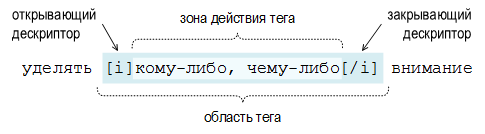
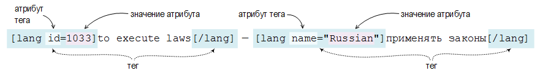

О тэгах DSL

Устройство тэгов
Тэги – это структурные и семантические элементы, которые определяют внешний вид или функциональное значение фрагментов текста.
Каждый тэг включает в себя два дескриптора: открывающий и закрывающий. Открывающий дескриптор обозначает начало зоны действия тэга, закрывающий – окончание зоны действия тэга. Открывающий дескриптор представляет собой один или несколько латинских (иногда также и цифровых) символов, заключённых в квадратные скобки. Например: [i], [com] или [m2]. К парному ему закрывающему дескриптору прибавляется косая черта: [/i], [/com] и [/m] соответственно. Символы между квадратными скобками являются своеобразными командами, которые присваивают определённое свойство тексту, находящемуся в зоне действия тэга.

Так, на примере выше, текст «кому-либо, чему-либо» будет отображаться в наклонном начертании, поскольку именно это свойство ему присваивает обрамляющий его тэг [i]. Пара дескрипторов вместе с находящимся между ними содержимым составляют т.н. область тэга.
Некоторые тэги в DSL располагают атрибутами, а атрибуты, в свою очередь, набором допустимых значений.

В данном примере тэг [lang] (тэг языкового направления) используется с двумя разными атрибутами: id и name. Допустимыми значениями атрибута id являются числовые коды языков, а атрибута name – английские названия языков.
Метасимволы и литералы
При чтении текста DSL словаря, словарная программа условно разделяет все встречающиеся символы на две группы: литералы и метасимволы.
Литералы – это простые символы. Такие символы программа пропускает и в окне словарной карточки они отображаются «как есть».
Метасимволы – это символы со специальным значением. Встретив такой символ, программа воспринимает его как сигнал к выполнению определённой операции, следовательно в окне словарной карточки этот символ уже не будет отображён.
Для того, чтобы отобразить метасимвол в окне словарной карточки, его необходимо экранировать, т.е. поставить перед ним обратную косую черту \. Например, чтобы отобразить в карточке метасимвол @, в DSL понадобится сделать такую запись: \@.
Для литерального отображения квадратных скобок, кроме способа экранирования, можно также их удваивать: [[···]]. При удваивании за квадратными скобками не должны следовать тэги. Так, например, запись [[[t] вызовет ошибку при компиляции словаря. Для корректной обработки этого примера необходимо записать его [[ [t] или \[[t].
Список метасимволов, употребляемых в DSL
| В теле статей и заголовках метасимволами являются: | ||
| [ ] | квадратные скобки | |
| @ | знак «эт» | |
| # | знак номера, «решётка» | |
| \ | обратная косая черта | |
| ~ | тильда | |
| ^ | циркумфлекс, «крышка» | |
| << >> | двойные угловые скобки, при этом одинарные воспринимаются как литералы |
|
| {{ }} | двойные фигурные скобки, при этом одинарные воспринимаются как литералы только в теле статей |
|
| В заголовках метасимволами являются: (при этом в теле статей воспринимаются как литералы) |
||
| ( ) | круглые скобки | |
| { } | фигурные скобки | |
Общие замечания
Символы в тэгах должны писаться в нижнем регистре. Например, [ref] — правильно, а [REF] — неправильно.
Не допускается размещение одинаковых тэгов в зоне действия друг друга. Т.е. запись типа [b][b]strong[/b][/b] является неправильной и будет отвергнута компилятором при конвертации.